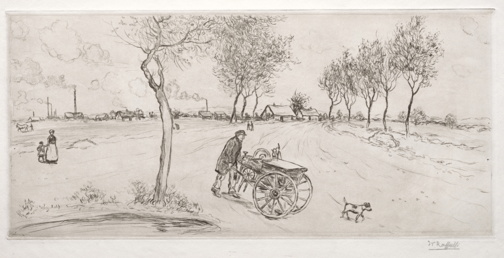

The Knifesharpener

Jean-François Raffaëlli, The Knifesharpener, 1907. Drypoint, sheet 36 × 54.3 cm. Cleveland Museum of Art 2005.340, CC0. Museum’s open-access image, 1263 × 649 px.
He is pushing it uphill, or the road only looks like it climbs. His back is bent, his left hand is on the shaft, his cap is square. The cart has two big wheels and one small one under the bed, and on the bed a grinding wheel stands on edge with a little can beside it, spout up. The near wheel has more spokes than I can count at this size; its hub is the darkest thing on the cart.
The dog is looking at the ground, not at him. It is the only figure walking toward us.
Nothing is being sharpened. The wheel is idle, the man is walking, and the sheet shows the moment between two doors.
Behind him the field is empty and white, drawn with a few long lines for ruts. At the left a woman in a long skirt holds the hand of a child. Further left a horse or donkey stands, small. On the horizon are several chimneys, at least three smoking, among low sheds; the smoke drifts right, and the clouds at the far left, drawn as loops, go nowhere. The trees along the road are all bare but for one on the right, which is drawn very thin and very tall, like a pen stroke that wouldn’t stop.
The signature is in the lower right, in pencil, outside the plate. In the plate, bottom left, there is a puddle or a pond done in a dozen heavy horizontal strokes. It is the blackest passage and the only place the picture looks as if it were drawn fast.
Later the same day I enlarged the wheel and the skyline to count what I had waved at. The near wheel shows about a dozen spokes, not a firm number: several are crossed by the rim of the far wheel and by shading. The horizon has six or seven stacks, the thinnest of them ruled in with a single line; three give off smoke. My earlier sentence about the smoke “drifting right” is only roughly true for the tall one and I would not defend it for the others.
← a7